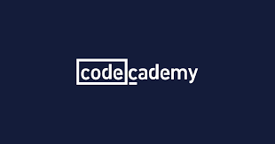
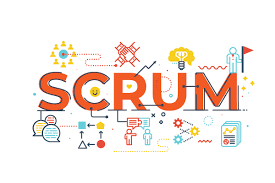

My Training
In March of 2020, the COVID-19 pandemic started, I capitalized on this opportunity to start my voyage in learning Python.
It was a rainy Saturday afternoon when I first discovered a YouTube channel called Programming with Mosh. I watched for
hours and was intrigued, having already been fluent in SQL and VBA for years I could immediately see
the use for learning these skills. Since starting this voyage, I have taken many data analysis/science courses.
Techincal Courses
Business Courses
Data Scientist Career Path

In Janaury 2022, I completed the Data Scientist career path on Codecademy. The course covered everything from intro to Python, Visualizations,
Statistics and Machine Learning. I course took 6 months and was filled with content, I learned a lot and was able to immediately
implement new solutions in my current job.
Data is everywhere. That means more companies are tracking data, analyzing data, and using the insights they find to make better decisions.
In this Skill Path, you’ll learn the fundamentals of data analysis while building Python skills.
AWS Certified Data Analytics Specialty 2022 - Hands On!

Course Overview - The AWS Certified Data Analytics Specialty Exam is one of the most challenging certification exams you can take from Amazon.
Passing it tells employers in no uncertain terms that your knowledge of big data systems is wide and deep. But, even experienced technologists
need to prepare heavily for this exam. This course sets you up for success, by covering all of the big data technologies on the exam and how
they fit together.

Course Overview - Learn data visualization through Tableau 2020 and create opportunities for you or key decision-makers to
discover data patterns such as customer purchase behavior, sales trends, or production bottlenecks. You'll
learn all of the features in Tableau that allow you to explore, experiment with, fix, prepare, and present
data easily, quickly, and beautifully. Use Tableau to Analyze and Visualize Data So You Can Respond
Accordingly Connect Tableau to a Variety of Datasets Analyze, Blend, Join, and Calculate Data Visualize
Data in the Form of Various Charts, Plots, and Maps

Course Overview - Apache Airflow is an open-source platform to programmatically author, schedule and monitor workflows. If y
ou have many ETL(s) to manage, Airflow is a must-have.
In this course you are going to learn everything you need to start using Apache Airflow through theory and pratical videos.
Starting from very basic notions such as, what is Airflow and how it works, we will dive into advanced concepts such as,
how to create plugins and make real dynamic pipelines.

The Complete Pandas Bootcamp 2022: Data Science with Python
Pandas fully explained | 150+ Exercises | Must-have skills for Machine Learning & Finance | + Scikit-Learn and Seaborn

The Complete SQL Bootcamp 2022: Go from Zero to Hero
Course description: You'll learn how to read and write complex queries to a database using one of the most in demand skills - PostgreSQL.
These skills are also applicable to any other major SQL database, such as MySQL, Microsoft SQL Server, Amazon Redshift, Oracle, and much more.
Learning SQL is one of the fastest ways to improve your career prospects as it is one of the most in demand tech skills! In this course
you'll learn quickly and receive challenges and tests along the way to improve your understanding!

If you're an office worker, student, administrator, or just want to become more productive with your computer, programming will allow you write
code that can automate tedious tasks. This course follows the popular (and free!) book, Automate the Boring Stuff with Python.
Automate the Boring Stuff with Python was written for people who want to get up to speed writing small programs that do practical tasks as soon
as possible. You don't need to know sorting algorithms or object-oriented programming, so this course skips all the computer science and concentrates
on writing code that gets stuff done.
Snowflake Decoded - Fundamentals and hands on Training
This course provides Snowflake concepts & hands on expertise to help get you started on implementing solutions using Snowflake.
This course reinforces the learning through hands on labs, assignments & quizzes.
Data Warehouse Fundamentals for Beginners
If you are a current or aspiring IT professional in search of sound, practical techniques to plan, design, and build a data warehouse
or data mart, this is the course for you.
During the course, you’ll put what you learn to work and define sample data warehousing architectures and dimensional data structures
to help emphasize the best practices and techniques covered in this course. Each section has either scenario based quiz questions or
hands on assignments that emphasizes key learning objectives for that section’s material. This way, you can be confident as you move
through the course that you’re picking up the key points about data warehousing.
Leadership: Practical Leadership Skills
Leadership is often seen as an elusive or complex skill, but with this practical course you'll soon have it mastered. Whether you're
managing a small team or an entire business this course will build essential skills for your time management, team motivation, and
personal happiness. Leadership is an essential skill at home, at work, and in every stage of your career. If you're in charge of two
or more people at work, this course could change your life.

Think Like a Leader with Brian Tracy
Many people who want to become leaders, achieve management roles, or improve their leadership skills go about it the wrong way. In
order to lead other people, you must first set a foundation for your own success before inspiring and motivating others. In Think
Like a Leader, Brian shows you how you can change your daily habits from the inside out to become a powerful motivator and ultimately
achieve leadership success.
Ask Better Questions - Build Better Relationships
Relationships: we all want better professional and personal relationships. Improving your questioning skills is a powerful way to build
stronger, better relationships. That's why, according to Anthony Robbins, successful people ask better questions.
Asking questions is a critical communication skill that most of us pay little attention to. It is the linchpin to building stronger
relationships, both professionally and personally. Learn to understand others before making, and acting on, inaccurate judgments that end
up making things worse rather than better.
Email Etiquette: Write More Effective Emails At Work
Do you worry your emails aren't having the impact you'd like?
Do you often have to chase people to respond to your emails?
Would you like to save time when writing emails?
Want to know how to get your message across in an email clearly, concisely and compellingly?
From one of Udemy's top writing instructors comes this short, sharp course on email etiquette.

This UNOFFICIAL course will take you from zero and prepare your Scrum Master certification. No previous experience with Scrum is needed.
In this UNOFFICIAL course you will: learn about the Scrum framework and Agile, understand the contents of the Scrum Guide, Practice what you have
learned with quizzes, Get exam tips, and Exam simulation with the help of mock exam questions
SIX SIGMA: LEAN SIX SIGMA WHITE BELT CERTIFICATION (ACCREDITED)
This Six Sigma White Belt Certification course is accredited by internationally recognized Continuing Professional Development (CPD) Certification Service
(Provider No: 14627, Certificate No: A029014-01).
Six Sigma White Belt Certification is the beginning of all Six Sigma certifications. As an individual grows the Six Sigma certification ladder, his resume becomes
highly lucrative and better than his peers. A Six Sigma Certification allows the individual to get the right visibility across all levels in the organization.
He starts adding value in whatever he does with the help of this Six Sigma knowledge, skills and expertise. This same Six Sigma certification allows him to minimize
or eliminate the competition.
If you are a working professional, you can’t just do your business as usual activities and expect a promotion OR a pay hike. If you are a fresher, you can’t just
complete education and directly land up into a dream job. Like you there are many professionals who are looking for the same exact thing. How could you be different?
You need an edge! And Six Sigma Certification is at the forefront of giving you that EDGE you were always looking for.
Technical Program Management
Designed both aspirants as well as experienced Technical Program Managers (TPM) the course aims to give you an insight into the TPM world from
across the industry. The course walks through the role of a modern TPM in a tech organization and gives the student insights gathered from
talking and interviewing hundreds of TPMs.